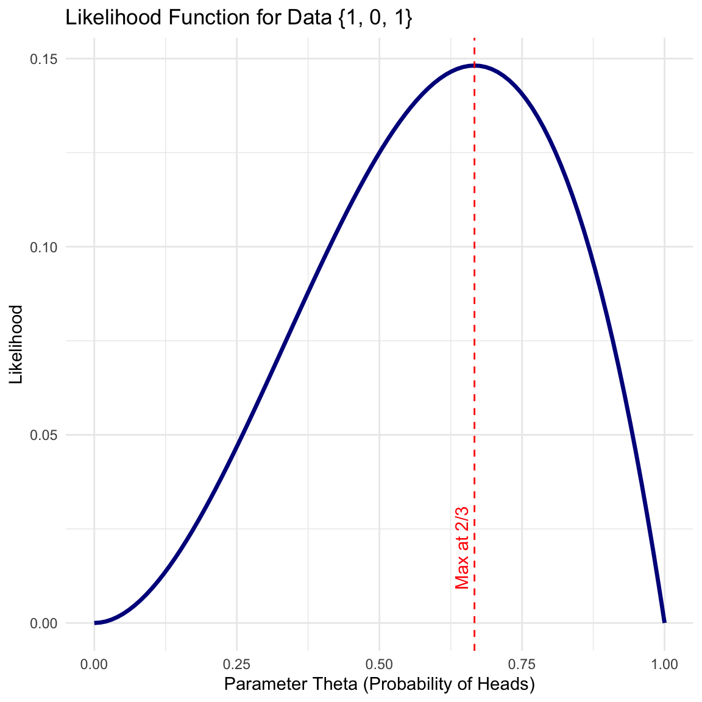

1 Introduction to Statistical Inference
1.1 Statistical Inference Setup
We begin with observations (units) \(X_1, X_2, \dots, X_n\). These may be vectors. We regard these observations as a realization of random variables.
Definition 1.1 (Population Distribution) We assume that \(X_1, X_2, \dots, X_n \sim f(x)\). The function \(f(x)\) is called the population distribution.
1.1.1 Assumptions and Scope
For simplicity, we often assume the data are Independent and Identically Distributed (i.i.d.).
In Parametric Statistics, we assume \(f(x)\) is of a known analytic form but involves unknown parameters.
Note on Simplicity:
The assumption that observations are identically distributed is made primarily for notational simplicity. There is no fundamental issue in extending this framework to regression settings, where the distribution depends on covariates (e.g., \(Y_i | X_i\)), or to other complex structures.
Example 1.1 (Parametric Model: Normal) Consider the Normal distribution: \[f(x; \theta) = \frac{1}{\sqrt{2\pi\sigma^2}} e^{-\frac{(x-\mu)^2}{2\sigma^2}}\] Here, the parameter space is \(\Theta = \{ (\mu, \sigma^2) : \mu \in \mathbb{R}, \sigma \in [0, +\infty) \}\). The goal is to learn aspects of the unknown \(\theta\) from observations \(X_1, \dots, X_n\).
Example 1.2 (Parametric Model: Bernoulli) Consider a sequence of coin flips where each \(X_i \in \{0, 1\}\). We assume \(X_i \sim \text{Bernoulli}(\theta)\). The probability mass function is: \[f(x; \theta) = \theta^x (1-\theta)^{1-x}\] Here, the parameter space is \(\Theta = [0, 1]\), where \(\theta\) represents the probability of success (e.g., “Heads”).
1.2 Probability vs. Statistics
There is a fundamental distinction between probability and statistics regarding the parameter \(\theta\). We can visualize this using a “shooting target” analogy:
\(\theta\) (The Center): The true, unknown bullseye location.
\(x\) (The Shots): The observed holes on the target board.
Probability (Deductive): The center \(\theta\) is known. We predict where the shots \(x\) will land.
Statistics (Inductive): The shots \(x\) are observed on the board. The center \(\theta\) is unknown. We hypothesize different potential centers to see which one best explains the shots.
1.3 The Likelihood Function
The bridge between probability and statistics is the Likelihood Function.
Definition 1.2 (Likelihood Function) Let \(f(x_1, \dots, x_n; \theta)\) be the joint probability density (or mass) function of the data given the parameter \(\theta\). When we view this function as a function of \(\theta\) for fixed observed data \(x_1, \dots, x_n\), we call it the likelihood function, denoted \(L(\theta)\). \[L(\theta) = f(x_1, \dots, x_n; \theta)\]
Example 1.3 (Example: Bernoulli Trial) Consider a coin flip where \(X \sim \text{Bernoulli}(\theta)\). The probability of Heads (1) is \(\theta\), and Tails (0) is \(1-\theta\). Suppose we observe 3 independent flips: 1, 0, 1.
The probability of observing this specific sequence is: \[L(\theta) = P(X_1=1) \cdot P(X_2=0) \cdot P(X_3=1) = \theta \cdot (1-\theta) \cdot \theta = \theta^2(1-\theta)\]
We can calculate the likelihood for various values of \(\theta\):
| \(\theta\) | Calculation (\(\theta^2(1-\theta)\)) | \(L(\theta)\) |
|---|---|---|
| 0.0 | \(0^2 \times 1\) | 0.000 |
| 0.2 | \(0.04 \times 0.8\) | 0.032 |
| 0.4 | \(0.16 \times 0.6\) | 0.096 |
| 0.6 | \(0.36 \times 0.4\) | 0.144 |
| 0.8 | \(0.64 \times 0.2\) | 0.128 |
| 1.0 | \(1^2 \times 0\) | 0.000 |
We can visualize this function to see which value of \(\theta\) is most “likely” (the maximum point).
Code
library(ggplot2)
# Define the function L(theta) = theta^2 * (1-theta)
likelihood_fun <- function(theta) { theta^2 * (1 - theta) }
# Generate sequence of theta
theta_vals <- seq(0, 1, length.out = 100)
lik_vals <- likelihood_fun(theta_vals)
df <- data.frame(theta = theta_vals, Likelihood = lik_vals)
# Plot
ggplot(df, aes(x = theta, y = Likelihood)) +
geom_line(color = "darkblue", size = 1.2) +
geom_vline(xintercept = 2/3, linetype = "dashed", color = "red") +
annotate("text", x = 2/3, y = 0.02, label = "Max~at~2/3", color = "red", angle = 90, vjust = -0.5, parse = TRUE) +
labs(title = expression(paste("Likelihood Function ", L(theta), " for Data {1, 0, 1}")),
x = expression(paste("Parameter ", theta, " (Probability of Heads)")),
y = expression(Likelihood~L(theta))) +
theme_minimal()

1.4 Types of Statistical Inference
We can categorize inference into four main types:
Definition 1.3 (Point Estimation) We use a single number to capture the parameter. \[\hat{\theta} = \theta(X_1, \dots, X_n)\]
Example 1.4 (Estimating Average Height) We want to estimate the average height (\(\mu\)) of all students in a university. We measure 100 students and calculate the sample mean \(\bar{x} = 170\) cm. Our point estimate is \(\hat{\mu} = 170\).
Definition 1.4 (Interval Estimation) We construct an interval that likely contains the true parameter. \[\theta \in (L(X_1, \dots, X_n), U(X_1, \dots, X_n))\] The true parameter is within this interval.
Example 1.5 (Confidence Interval for Height) Using the same height data, we calculate a 95% Confidence Interval. We state: “We are 95% confident that the true average height is between 168 cm and 172 cm.”
Definition 1.5 (Hypothesis Testing) We test a specific theory about the parameter. \[H_0: \theta = \theta_0 \quad \text{vs} \quad H_1: \theta \neq \theta_0\] (Or one-sided alternatives like \(\theta > \theta_0\)).
Example 1.6 (Testing Soda Volume) A manufacturer claims their soda bottles contain exactly 500ml (\(H_0: \mu = 500\)). We measure a sample and find an average of 495ml. We perform a test to see if this difference is significant enough to reject the manufacturer’s claim.
Definition 1.6 (Predictive Inference) Given observed data \((X_1, Y_1), \dots, (X_n, Y_n)\), we want to predict a new observation \(Y_{n+1}\) given \(X_{n+1}\). This is often the primary goal in Machine Learning.
Example 1.7 (Predicting House Prices) Based on data about house sizes (\(X\)) and prices (\(Y\)) from the last year, we want to predict the selling price (\(Y_{n+1}\)) of a specific new house that is 2000 sq ft (\(X_{n+1}\)).
1.5 Standard Paradigms for Inference
There are two primary frameworks for how to perform these inferences.
1.5.1 Frequentist Inference (Fisher)
Developed largely by Fisher (c. 1920).
- Concept: The parameter \(\theta\) is a fixed, unknown constant. The data \(X\) are random.
- Repeated Sampling Principle: Inference is based on the performance of methods (estimators) under hypothetical repeated sampling of the data.
- Sampling Distribution: We analyze how the estimator \(\hat{\theta}\) behaves over many different datasets generated from the same population.

1.5.1.1 Bernoulli Example: Sampling Distribution
For our Bernoulli data (\(x = \{1, 0, 1\}\), \(n=3\)), the estimator \(\bar{X}\) is a scaled Binomial variable. If the true parameter were \(\theta = 0.5\), the exact distribution and its Normal approximation would be:
Code
true_theta <- 0.5
n <- 3
k_vals <- 0:n
x_bar_vals <- k_vals / n
probs <- dbinom(k_vals, size=n, prob=true_theta)
df_exact <- data.frame(x_bar = x_bar_vals, prob = probs)
x_grid <- seq(-0.2, 1.2, length.out=200)
sd_approx <- sqrt(true_theta * (1 - true_theta) / n)
norm_dens <- dnorm(x_grid, mean=true_theta, sd=sd_approx)
df_approx <- data.frame(x = x_grid, density = norm_dens)
# Identify extreme regions for p-value shading (Two-sided: x >= 2/3 and x <= 1/3)
# Note: 1/3 is symmetric to 2/3 around the mean of 0.5
df_shade <- subset(df_approx, x >= 2/3 | x <= 1/3)
ggplot() +
# 1. Exact Discrete Bars
geom_segment(data=df_exact, aes(x=x_bar, xend=x_bar, y=0, yend=prob),
size=5, color="darkgreen", alpha=0.6) +
# 2. Shaded P-value Regions (Normal Approx)
geom_area(data=df_shade, aes(x=x, y=density * (1/n)),
fill="red", alpha=0.3) +
# 3. Normal Approximation Curve
geom_line(data=df_approx, aes(x=x, y=density * (1/n)),
color="red", size=1.2, linetype="dashed") +
# 4. Vertical Line at Observed Mean
geom_vline(xintercept = 2/3, color = "blue", size = 1, linetype = "solid") +
annotate("text", x = 2/3, y = -0.02, label = "Observed\nbar(x) == 2/3",
parse = TRUE, color = "blue", vjust = 1, size = 3.5) +
labs(title = expression(paste("Sampling Distribution: Transformed Binomial vs. Normal")),
subtitle = expression(paste("Testing ", H[0]: theta == 0.5, " vs ", H[1]: theta != 0.5)),
x = expression(bar(x)), y = "Probability Mass") +
theme_minimal() +
# Increase bottom margin for annotation
theme(plot.margin = margin(t=10, r=10, b=30, l=10))
1.5.2 Bayesian Inference
In the Bayesian framework, we treat the parameter \(\theta\) as a random variable representing our knowledge/uncertainty.
- Prior: We assign a prior distribution \(\pi(\theta)\) reflecting beliefs before seeing data.
- Data Model: We have the likelihood \(f(x_1, \ldots, x_n|\theta)\).
- Posterior: We compute the posterior distribution using Bayes’ theorem: \[f(\theta|x_1, \ldots, x_n) = \frac{\pi(\theta)f(x_1, \ldots, x_n|\theta)}{\int \pi(\theta)f(x_1, \ldots, x_n|\theta) d\theta}\]
In this framework, inference is based entirely on the Posterior Distribution, which combines the Prior and the Likelihood.
1.5.2.1 Bernoulli Example: Bayesian Update
Using \(x = \{1, 0, 1\}\) and a weakly informative \(\text{Beta}(2,2)\) prior:
- Prior: \(\theta \sim \text{Beta}(2,2)\)
- Likelihood: \(L(\theta) \propto \theta^2(1-\theta)^1\)
- Posterior: \(\theta|x \sim \text{Beta}(2+2, 2+1) = \text{Beta}(4,3)\)
Code
theta_grid <- seq(0, 1, length.out = 200)
prior <- dbeta(theta_grid, 2, 2)
posterior <- dbeta(theta_grid, 4, 3)
df_bayes <- data.frame(
Theta = rep(theta_grid, 2),
Density = c(prior, posterior),
Type = rep(c("Prior", "Posterior"), each = 200)
)
ggplot(df_bayes, aes(x = Theta, y = Density, color = Type, linetype = Type)) +
geom_line(size = 1.2) +
scale_color_manual(values = c("Posterior" = "blue", "Prior" = "gray")) +
labs(title = "Bayesian Updating: Prior vs Posterior",
x = expression(theta), y = "Density") +
theme_minimal()
1.5.3 Bayesian Prediction
The predictive density for a new observation \(x_{n+1}\) is obtained by integrating over the posterior: \[f(x_{n+1}|x) = \int f(x_{n+1}|\theta) \pi(\theta|x) d\theta\]